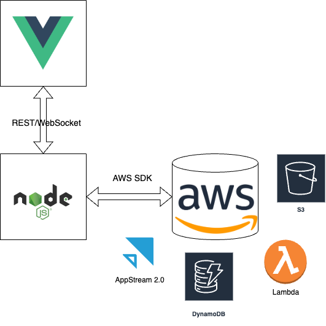

<!DOCTYPE html>
<html lang="en">
  <head>
    <title>iteratec 4developers</title>
    <meta charset="utf-8">
    <meta name="author" content=" ">
    <meta name="description" content=" AR  ">
    <meta name="viewport" content="width=device-width, initial-scale=1.0, maximum-scale=1.0, user-scalable=no, minimal-ui">
    <link href="reveal/reveal.css" rel="stylesheet">
    <link href="reveal/white.css" rel="stylesheet">
    <link href="css/base.css" rel="stylesheet">
    <link href="css/reveal-adj.css" rel="stylesheet">
    <link href="css/utils.css" rel="stylesheet">
    <link href="css/custom.css" rel="stylesheet">
    <link href="css/examples.css" rel="stylesheet"><!-- Theme used for syntax highlighting of code -->
    <link rel="stylesheet" href="css/atom-light.css" id="highlight-theme">
    <script src="reveal/plugin/highlight/highlight.js"></script>
  </head>
</html>
<body>
  <div class="reveal">
    <div class="slides">
      <section id="title-0" data-transition="fade-out fade-out">
        <h2 class="header"></h2>
        <div>
          <div class="flex">
            <h2><br><br>Czasem warto<br>wyważać otwarte<br>drzwi,</h2>
            <div class="fragment" style="margin-top: 90px;">czyli jak napisaliśmy sobie lepszą implementację produktu AWS</div>
          </div>
          <div class="decoration-title left-top"> 
            <div class="box black"></div>
            <div class="box magenta"></div>
            <div class="box yellow"></div>
            <div class="box magenta"></div>
            <div class="box mint"></div>
            <div class="box white"></div>
            <div class="box yellow"></div>
            <div class="box white"></div>
            <div class="box white"></div>
          </div>
          <div class="decoration-title left-bottom">
            <div class="box yellow"></div>
            <div class="box white"></div>
            <div class="box white"></div>
            <div class="box magenta"></div>
            <div class="box mint"></div>
            <div class="box white"></div>
            <div class="box black"></div>
            <div class="box magenta"></div>
            <div class="box yellow"></div>
          </div>
          <div class="decoration-title right-top"> 
            <div class="box yellow"></div>
            <div class="box magenta"></div>
            <div class="box black"></div>
            <div class="box white"></div>
            <div class="box mint"></div>
            <div class="box magenta"></div>
            <div class="box white"></div>
            <div class="box white"></div>
            <div class="box yellow"></div>
          </div>
          <div class="decoration-title right-bottom"> 
            <div class="box white"></div>
            <div class="box white"></div>
            <div class="box yellow"></div>
            <div class="box white"></div>
            <div class="box mint"></div>
            <div class="box magenta"></div>
            <div class="box yellow"></div>
            <div class="box magenta"></div>
            <div class="box black"></div>
          </div>
        </div>
      </section>
      <section id="historia-1" data-transition="slide">
        <h2 class="header">Styczeń 2020</h2>
        <div>
          <ul>
            <li class="fragment">Płonie Australia</li>
            <li class="fragment">Wielka Brytania jeszcze (przez chwile) w UE</li>
            <li class="fragment">Covid to chyba cos z chińskich nietoperzy</li>
            <li class="fragment">Pracujemy z biur</li>
            <li class="fragment">iteratec zaczyna projekt dla niemieckiej firmy z branży automotive</li>
          </ul>
        </div>
      </section>
      <section id="iteratec-2" data-transition="slide">
        <h2 class="header">iteratec</h2>
        <div>
          <ul>
            <li class="fragment">~500 Pracowników w 7 miastach (Monachium, Dusseldorf, Frankfurt, Hamburg, Stuttgart, Wiedeń,<strong> Wrocław</strong>)</li>
            <li class="fragment">Projekty dla niemieckich klientów (od startupów po największe niemieckie firmy)</li>
            <li class="fragment">Ciekawy model właścicielski</li>
            <li class="fragment">Po wiecej informacji zapraszamy na stoisko</li>
          </ul>
        </div>
      </section>
      <section id="klient-3" data-transition="slide">
        <h2 class="header"> Klient</h2>
        <div>
          <ul>
            <li class="fragment">Branża automotive</li>
            <li class="fragment">Dział projektowy</li>
            <li class="fragment">Praca na dedykowanych aplikacjach na platformach Unreal/VRED/Unity</li>
            <li class="fragment">Wysokie wymagania sprzętowe</li>
            <li class="fragment">Kooperacja</li>
          </ul>
        </div>
      </section>
      <section id="projekt-4" data-transition="slide">
        <h2 class="header">Projekt</h2>
        <div>
          <ul>
            <li class="fragment">Wiele źródeł danych</li>
            <li class="fragment">Różne metody autoryzacji/autentykacji</li>
            <li class="fragment">Różne API</li>
          </ul>
          <h3 class="fragment">Nasze zadanie : Posprzątać to</h3>
          <ul>
            <li class="fragment">spójne API</li>
            <li class="fragment">spójne logowanie</li>
            <li class="fragment">dodać cachowanie</li>
          </ul>
        </div>
      </section>
      <section id="marzec2020-5" data-transition="slide">
        <h2 class="header">Marzec 2020</h2>
        <div>
          <ul>
            <li style="text-decoration: line-through;">Płonie Australia</li>
            <li class="strong">odmieniamy COVID przez wszystkie przypadki</li>
            <li style="text-decoration: line-through;">Wielka Brytania jeszcze (przez chwile) w UE</li>
            <li style="text-decoration: line-through;">pracujemy z biur</li>
          </ul>
        </div>
      </section>
      <section id="nowe-wyzwanie-6" data-transition="slide">
        <h2 class="header">nowe wyzwanie - HO</h2>
        <div>
          <h3> Zdalny Pulpit (RDP)</h3>
          <ul>
            <li class="fragment">out of the box (VPN)</li>
            <li class="fragment">1 użytkownik 1 komputer - nowy pracownik nowy komputer</li>
            <li class="fragment">a co jak komputer sie wyłączy</li>
            <li class="fragment">nie rozwiązany problem kooperacji</li>
          </ul>
        </div>
      </section>
      <section id="historia-7" data-transition="slide">
        <h2 class="header">nowa nadzieja</h2>
        <div>
          <h3> AWS AppStream 2.0</h3>
          <ul>
            <li class="fragment italics">'Secure, reliable, and scalable application streaming and low-cost virtual desktop service'</li>
            <li class="fragment">usługa AWS pozwalająca na uruchomienie komputera i dostęp do niego przez przeglądarkę</li>
            <li class="fragment">Pay per Use (1.5 Euro / h)</li>
            <li class="fragment">Klient:<span class="italics"> 'Możecie stworzyć male POC i sprawdzić czy to działa'</span></li>
            <li class="fragment">iteratec:<span class="italics"> 'będzie Pan zadowolony'</span></li>
          </ul>
        </div>
      </section>
      <section id="poc-8" data-transition="none">
        <h2 class="header">POC</h2>
        <div></div>
      </section>
      <section id="poc / produkt-9" data-transition="none">
        <h2 class="header">POC / produkt</h2>
        <div></div>
      </section>
      <section id="produkt-10" data-transition="none">
        <h2 class="header">produkt</h2>
        <div></div>
      </section>
      <section id="sukces-11" data-transition="slide">
        <h2 class="header">Sukces</h2>
        <div>
          <ul>
            <li class="fragment">POC -> Działający produkt</li>
            <li class="fragment">Współdzielenie sesji</li>
            <li class="fragment">Wsparcie dla Gogli VR</li>
            <li class="fragment">xxx</li>
          </ul>
        </div>
      </section>
      <section id="every after-12" data-transition="slide">
        <h2 class="header"></h2>
        <div></div>
      </section>
      <section id="every after-13" data-transition="slide">
        <h2 class="header"></h2>
        <div>
          <h2 class="fragment">G5</h2>
        </div>
      </section>
      <section id="every after-14" data-transition="slide">
        <h2 class="header">AppStream 2.0</h2>
        <div></div>
      </section>
      <section id="every after-15" data-transition="slide">
        <h2 class="header">AppStream vs EC2</h2>
        <div>
          <ul>
            <li>Image builder vs EC2 AMI</li>
            <li>Session script vs User data</li>
            <li>Single app mode vs winlogon overwrite</li>
          </ul>
        </div>
      </section>
      <section id="every after-16" data-transition="slide">
        <h2 class="header">EC2</h2>
        <div></div>
      </section>
      <section id="every after-17" data-transition="slide">
        <h2 class="header">ASG vs AppStream</h2>
        <div>Content</div>
      </section>
      <section id="every after-18" data-transition="slide">
        <h2 class="header">Fleet Mgmt</h2>
        <div>Content</div>
      </section>
      <section id="every after-19" data-transition="slide">
        <h2 class="header">Orders service</h2>
        <div>Content</div>
      </section>
      <section id="every after-20" data-transition="slide">
        <h2 class="header">Assignment service</h2>
        <div>Content</div>
      </section>
      <section id="every after-21" data-transition="slide">
        <h2 class="header">Event Bridge</h2>
        <div>Content</div>
      </section>
      <section id="every after-22" data-transition="slide">
        <h2 class="header">Events Service</h2>
        <div>Content</div>
      </section>
      <section id="every after-23" data-transition="slide">
        <h2 class="header">Event Log</h2>
        <div>Content</div>
      </section>
      <section id="every after-24" data-transition="slide">
        <h2 class="header">Feedback Topic</h2>
        <div>Content</div>
      </section>
      <section id="every after-25" data-transition="slide">
        <h2 class="header">Url Service</h2>
        <div>Content</div>
      </section>
      <section id="every after-26" data-transition="slide">
        <h2 class="header">Timeout Service</h2>
        <div>Content</div>
      </section>
      <section id="every after-27" data-transition="slide">
        <h2 class="header">Prod release?</h2>
        <div>Jakiś mem i anegdota o końcu fizyki</div>
      </section>
      <section id="every after-28" data-transition="slide">
        <h2 class="header">ALB</h2>
        <div>Content</div>
      </section>
      <section id="every after-29" data-transition="slide">
        <h2 class="header">EBS matters</h2>
        <div>Content</div>
      </section>
      <section id="every after-30" data-transition="slide">
        <h2 class="header">Instance store</h2>
        <div>Content</div>
      </section>
      <section id="every after-31" data-transition="slide">
        <h2 class="header">Prod release</h2>
        <div>Jakiś mem o zwycięstwie</div>
      </section>
      <section id="every after-32" data-transition="slide">
        <h2 class="header">Vred, Pixel Streaming, etc.</h2>
        <div>Content</div>
      </section>
      <section id="every after-33" data-transition="slide">
        <h2 class="header">Asg configurations</h2>
        <div>Content</div>
      </section>
      <section id="every after-34" data-transition="slide">
        <h2 class="header">Always-ons</h2>
        <div>Content</div>
      </section>
      <section id="every after-35" data-transition="slide">
        <h2 class="header">Regions</h2>
        <div>Content</div>
      </section>
      <section id="every after-36" data-transition="slide">
        <h2 class="header">Tech summary</h2>
        <div><i>Opcjonalnie</i><br><br>Co się technicznie zmieniło w projekcie (?)
          <ul>
            <li>instalowanie ręczne -> batch -> półautomat w powershellu</li>
            <li>cloudformation -> terraform</li>
            <li>appstream -> autoscaling, elb, sns, sqs, eventbridge...</li>
          </ul>
        </div>
      </section>
    </div>
  </div>
  <!--
  //include slides/css/title-img
  //include slides/css/agenda-no
  //include slides/css/agenda-colors
  //include slides/css/agenda-yes
  ////- include ./slides/agenda-qr.pug
  //include slides/css/lets-meet
  //include slides/css/programming-language
  //include slides/css/programming-language2
  //include slides/css/browser-wars
  //include slides/css/browser-peace
  //include slides/css/disclaimer
  //include slides/css/syntax
  //include slides/css/syntax2
  //
  //include slides/css/variables-title
  //include slides/css/variables
  //include slides/css/variables-example
  //
  //include slides/css/function-title
  //include slides/css/function
  //include slides/css/function2
  //include slides/css/function-example
  //include slides/css/function-box-code
  //include slides/css/function-box-css
  //include slides/css/function-box
  //include slides/css/function-box-css2
  //include slides/css/function-box-code2
  //include slides/css/function-box2
  //include slides/css/function-box-css3
  //include slides/css/function-box-code3
  //include slides/css/function-box3
  //include slides/css/function-example4
  //include slides/css/function-example-image
  //include slides/css/function-example5
  //include slides/css/function-box6start
  //include slides/css/function-box6
  //include slides/css/function-box7
  //include slides/css/function-box8
  //include slides/css/function-box9
  //include slides/css/function-example10
  //include slides/css/function-example-math
  //include slides/css/function-example11
  //include slides/css/function-example12
  //include slides/css/function-example13
  //include slides/css/function-example14
  //
  //
  //include slides/css/selectors-title
  //include slides/css/syntax2
  //include slides/css/selectors-prio
  //include slides/css/selectors-next-level
  //include slides/css/selectors-example
  //include slides/css/selectors-example2
  //include slides/css/selectors-example3
  //include slides/css/selectors-example4
  //include slides/css/selectors-example5
  //include slides/css/selectors-example54
  //include slides/css/selectors-example55
  //include slides/css/selectors-example6
  //include slides/css/selectors-example7
  //include slides/css/selectors-example8
  //include slides/css/selectors-example9
  //include slides/css/selectors-example9-2
  //include slides/css/selectors-example10
  //include slides/css/selectors-example10-2
  //include slides/css/selectors-example11
  //include slides/css/selectors-example11-2
  //include slides/css/selectors-example11-3
  //include slides/css/selectors-example12
  //include slides/css/selectors-example12example
  //include slides/css/selectors-pseudo-selector
  //include slides/css/selectors-example20
  //include slides/css/selectors-example21
  //include slides/css/selectors-example22
  //include slides/css/selectors-example23
  //include slides/css/selectors-example24
  //include slides/css/selectors-example25
  //include slides/css/selectors-example26
  //include slides/css/selectors-example27
  //include slides/css/selectors-pseudo-elements
  //include slides/css/selectors-example30
  //include slides/css/selectors-example31
  //
  //include slides/css/mediaQueries-title
  //include slides/css/mediaQueries
  //include slides/css/mediaQueries-example
  //
  //include slides/css/colors-title
  //include slides/css/colors
  //include slides/css/colors-example
  //include slides/css/colors-example2
  //
  //include slides/css/units-title
  //include slides/css/units
  ////- include ./slides/units-example.pug
  //
  //
  //include slides/css/summary
  ////- include ./slides/demo.pug
  //include slides/css/theend
  
  -->
  <div class="frame space">
    <h3>
       Czasem warto wyważać otwarte drzwi, czyli jak napisaliśmy sobie lepszą implementację produktu AWS  - Jakub Dymon,  Paweł Kamiński</h3>
    <h3>4Developers Wroclaw 2023</h3>
  </div>
  <script src="reveal/reveal.js"></script>
  <script>
    function shuffleArray(array) {
        for (let i = array.length - 1; i > 0; i--) {
            const j = Math.floor(Math.random() * (i + 1));
            [array[i], array[j]] = [array[j], array[i]];
        }
        
    }
    
     const backgroundColors = ['magenta','yellow','mint', 'white']
    
      
  </script>
  <script>
    Reveal.initialize({
         controls: false,
        // progress: true,
        history: true,
        center: false,
        // center: true,
        // rollingLinks: true,
        // transition: "convex",
        // width: "90%",
        // height: 1.0,
        dependencies: [            ],
         plugins: [ RevealHighlight ]
    });
    
  </script>
  <script>
    Reveal.on('slidechanged', () => {
    
    const decoration =  backgroundColors;
    shuffleArray(decoration)
    const sliced = decoration.slice(0,4)
    //sliced.push('white','white','white','white')
    shuffleArray(sliced);
    
    
     document.querySelectorAll('.present .decoration .box').forEach(
        e=> {                
            e.classList.remove(...backgroundColors);
            e.classList.add(sliced.pop()) 
        }
     )
    
    const random =   Math.floor(Math.random() * 3) 
    document.querySelector('.present .decoration').style.left='';
    document.querySelector('.present .decoration').style.bottom='';
    document.querySelector('.present .decoration').style.right='';
    document.querySelector('.present .decoration').style.top='';
    switch(random){
        case 0: { 
             document.querySelector('.present .decoration').style.left='3vw';
             document.querySelector('.present .decoration').style.bottom='3vh';
             return;
            }
    
        case 1: { 
             document.querySelector('.present .decoration').style.right='3vw';
             document.querySelector('.present .decoration').style.bottom='3vh';
             return;
            }
        case 2: { 
             document.querySelector('.present .decoration').style.right='3vw';
             document.querySelector('.present .decoration').style.top='3vh';
             return;
            }
    }
    });
  </script>
</body>